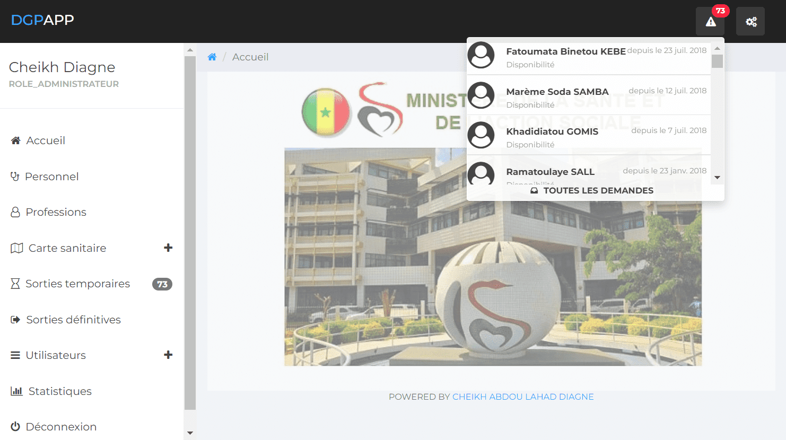

Contexte
La Direction des Ressources Humaines s’appuie sur iHRIS pour consolider et exploiter les données des personnels de santé à l’échelle nationale.
Le dispositif implique les niveaux central, régional, district et établissement public de santé.
Contribution
Du système à l’adoption
Administration fonctionnelle et technique d’iHRIS, coordination du déploiement dans 14 régions, formation des points focaux, contrôle qualité, extraction et valorisation des données.
Participation à la migration vers iHRIS v5 en 2025, ainsi qu’au développement d’outils complémentaires de gestion des contractuels, des sorties et de l’archivage.
Résultats
Une base nationale couvrant plus de 25 000 agents, des points focaux formés et un système progressivement modernisé pour soutenir la planification des ressources humaines en santé.

